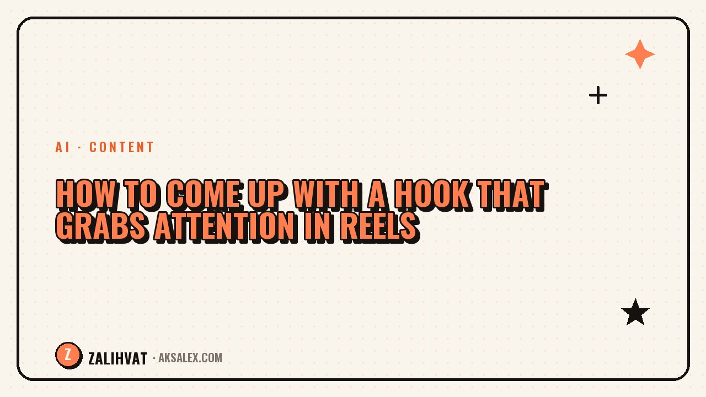

How to Come Up with a Hook That Grabs Attention in Reels

The first second and a half to two seconds of a video decide whether someone watches on or scrolls past. That's the hook - a phrase or shot that grabs attention before the viewer even has time to think "not interesting." A good hook won't save a weak video entirely, but a bad hook will kill even strong content before it gets its turn.
Why the hook matters more than it seems
Social media algorithms treat attention retention in the first seconds as one of the key signals. If people massively drop off at the second mark, the video stops getting shown - and it's not about the topic, it's about the opening.
A hook works like an article headline: it doesn't need to explain the whole content, its job is to make you watch the next five seconds. After that, the content itself takes over.
What a strong hook is made of
Conflict or the unexpected
People stop for things that break expectations: "everyone does it this way, but I do the opposite" works better than a neutral "let me tell you about...".
Specifics instead of generalities
"3 mistakes I kept making for six months" grabs attention harder than "let me tell you about my mistakes." A number and a timeframe give the viewer a clear frame.
A promise of a result
The hook should hint at what the viewer will get: a solution to a problem, an insight, or a ready-made formula. Without that, even an intriguing phrase wears thin fast.
Hook formulas with examples
Here are a few working templates you can adapt to any niche.
| Formula | Example |
|---|---|
| Mistake + result | I was doing this wrong for a month - here's what changed when I fixed it |
| First-person question | Why couldn't I grow my reach for six months |
| Contrast of expectations | Everyone says post daily, I post once a week |
| Number + timeframe | 3 tools that saved me 10 hours a week |
| Personal confession | I used to be afraid to show my face on camera - here's what helped |
Where to find raw material for hooks
The fastest source is the comments under your own and other people's videos in your niche: the audience's pain points are already spelled out there, in their own words. The second source is personal situations where something didn't go according to plan. It's exactly the failures and unexpected outcomes that make the most genuine openings.
A hook that sounds like a real person's thought is always stronger than a hook that sounds like an ad.
An AI tool is handy at the stage when you need to quickly generate 10-15 variations on one formula - from there you pick two or three that sound natural in your own voice.
How to test hooks
- Shoot 2-3 hook variations for the same video and compare retention
- Look not just at views, but at the completion rate for the first three seconds
- Keep a separate note of the formulas that worked - after a month you'll have your own personal library
- Don't change more than one variable at a time, or you won't know what actually worked
Common hook mistakes
The most common mistake is a long intro: a greeting, an introduction, a slow build-up to the topic. All of that should be cut, and you should start straight with the point. The second mistake is a hook disconnected from the content: it gets views, but breaks expectations, and people leave disappointed by the end of the video.
The third mistake is using the same hook in every video in a row. The audience quickly picks up on the pattern, and the novelty effect disappears.
Frequently Asked Questions
How long should a hook be?
Usually 1-2 seconds per phrase or shot. Any longer and the viewer has time to decide the video isn't for them.
Should the hook be delivered with emotion?
Yes, tone of voice and facial expression boost the effect just as much as the words themselves. A flat, monotone delivery lowers retention even with a strong script.
Can the same hook be reused?
Yes, but not back-to-back in several videos. Let the audience forget the formula before you use it again.
How do you know a hook didn't work?
Watch for a sharp drop in retention in the first seconds in the video's stats. If it's steeper than usual, the problem is the opening, not the topic.
Should you write the hook in advance or improvise?
It's better to prepare at least 2-3 options in advance. Improvising in front of the camera usually ends up longer and vaguer than a pre-written line.
not by hand